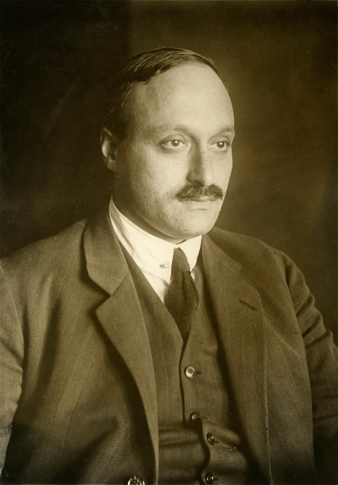
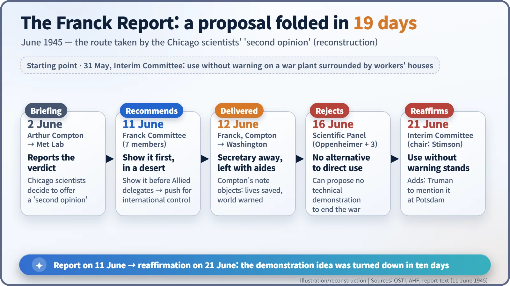
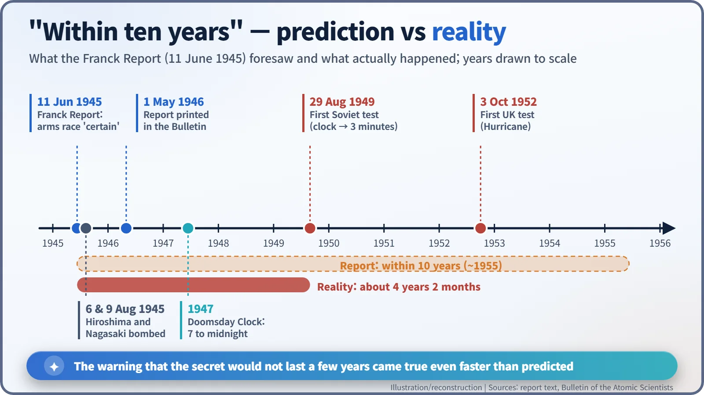

Nuclear History · 114
Empty Chairs in the Desert — The Franck Report and the Bomb Demonstration That Never Happened (1945)
Seven Chicago scientists asked for a demonstration instead of a surprise attack, and predicted an arms race that arrived even sooner than they feared.
On 11 June 1945, seven scientists at the University of Chicago's Metallurgical Laboratory, chaired by the Nobel laureate James Franck, warned that the atomic secret would not last, that a nuclear arms race was certain, and that the bomb should first be demonstrated in a desert or on a barren island before Allied delegates. Within ten days the proposal had been turned down. Their forecast came true faster than they expected.
Chairs in the desert
Picture a row of folding chairs set out on a desert plateau, or on a barren island, in the summer of 1945. Delegates from every Allied nation take their seats and watch the horizon. A new weapon goes off in front of them, far from any town. They fly home having seen its power with their own eyes, and the conversation turns to one question: how do we control this? It never happened. But a group of scientists in Chicago proposed exactly that, in writing, on 11 June 1945. Their document was the "Report of the Committee on Political and Social Problems", better known as the Franck Report. [1]
A question that appeared when the enemy disappeared
The American bomb project had been driven by one fear: that Nazi Germany would get there first. On 8 May 1945 Germany surrendered. At the University of Chicago's Metallurgical Laboratory, the Met Lab, most of the research needed for plutonium production was winding down. The scientists suddenly had time to think, and the question they asked changed from "Can it be built?" to "What happens after we use it?"
On 2 June the lab's director, Arthur Compton, briefed his staff on the conclusions of the Interim Committee, the high-level body advising the Secretary of War. At its meeting on 31 May the committee had recommended using the bomb without warning against a war plant surrounded by workers' houses. The Chicago scientists decided to offer a second opinion. [2]
A Nobel laureate in the chair
The committee was chaired by James Franck (1882–1964), who had shared the 1925 Nobel Prize in Physics with Gustav Hertz for discovering the laws that govern collisions between electrons and atoms. In 1933 he had resigned his professorship at Göttingen in protest against the Nazi civil-service law and later emigrated; at the Met Lab he led the Chemistry Division. Seven members signed the report, among them Glenn T. Seaborg and Leo Szilard. Most of the text was written by Eugene Rabinowitch (1901–1973). [3] [6]

What the report saw coming
The authors were careful about their standing. "The scientists on this Project do not presume to speak authoritatively on problems of national and international policy," they wrote; they spoke from "the position of a small group of citizens cognizant of a grave danger for the safety of this country". Their arguments, though, were sharp. [1]
- The secret will not keep. "Nuclear bombs cannot possibly remain a 'secret weapon' at the exclusive disposal of this country for more than a few years." Controlling uranium ore would not change that.
- An arms race is coming. Once the bomb was revealed, "a race of nuclear armaments is certain to ensue", and "within ten years other countries may have nuclear bombs". In that world a surprise attack could mean a "Pearl Harbor disaster, repeated in thousandfold magnification, in every one of our major cities".
- How the bomb is first used matters. "If the United States would be the first to release this new means of indiscriminate destruction upon mankind, she would sacrifice public support throughout the world." The alternative was a demonstration "before the eyes of representatives of all the United Nations, on the desert or a barren island". Use against Japan could then be considered with the sanction of the United Nations and of public opinion at home, perhaps after an ultimatum.
The real obstacle to an international agreement, the report argued, was "lack of mutual trust, and not lack of desire for agreement". Its summary called "the use of nuclear bombs for an early, unannounced attack against Japan inadvisable". [1]
Sent to Washington, answered with silence
On 12 June Franck carried the report to Washington. Compton forwarded it to the Secretary of War, Henry Stimson, with a cover note, and that note disagreed. Compton wrote that the committee had not weighed "the probable net saving of many lives", nor the fact that without actual use "the world would have no adequate warning as to what was to be expected if war should break out again". Franck was told that Stimson was away from the capital (the Atomic Heritage Foundation says that was not true), and the report was left with his staff. Whether Stimson ever read it remains uncertain. [3]
The report went to the committee's Scientific Panel: J. Robert Oppenheimer, Enrico Fermi, Arthur Compton and Ernest Lawrence. On 16 June the panel replied: "we can propose no technical demonstration likely to bring an end to the war; we see no acceptable alternative to direct military use." It did, however, also recommend telling Britain, the Soviet Union, France and China that the work was progressing and asking how the new development could "contribute to improved international relations". Scientists who had worked side by side were reaching different conclusions. On 21 June the Interim Committee reaffirmed its earlier recommendation. [2] [4]

When reality caught up with the forecast
On 6 and 9 August the bombs fell on Hiroshima and Nagasaki without warning. The report stayed classified until 1946; on 1 May 1946, with some passages censored, it appeared in the Bulletin of the Atomic Scientists. The Bulletin had started in 1945 as a mimeographed newsletter put out by Chicago scientists, with Rabinowitch as editor until his death in 1973. From 1947 its cover carried the Doomsday Clock. [3] [4]
How good was the forecast? The Soviet Union tested its first atomic bomb on 29 August 1949, about four years and two months after the report was written, well inside its "within ten years". That year the Doomsday Clock moved from seven minutes to midnight to three. Britain followed with its first test on 3 October 1952. [5]

The question that stayed
Nobody can say whether a demonstration would have ended the war sooner, or with less suffering. The Scientific Panel had its reasons, and historians still debate how much weight the report carried with the people who made the decision. One thing is clear, though: before the first bomb was dropped, a few of the scientists who built it had already seen much of what would come afterwards. "By an accident of history, we were among a very few who were aware of a new, world-threatening peril, and we felt obligated to express our views," Seaborg later recalled. The chairs in the desert stayed empty, but the question the Chicago scientists asked is still with us. [6]